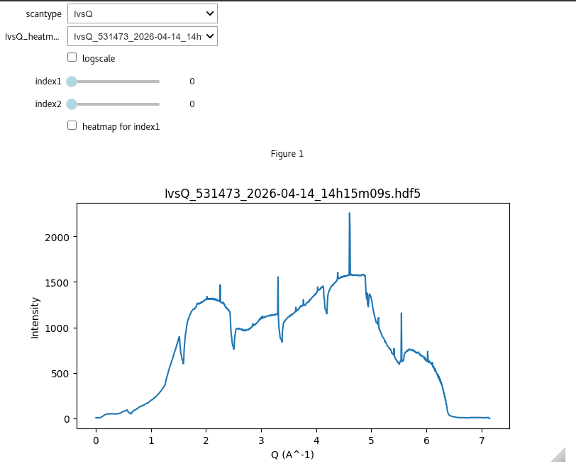
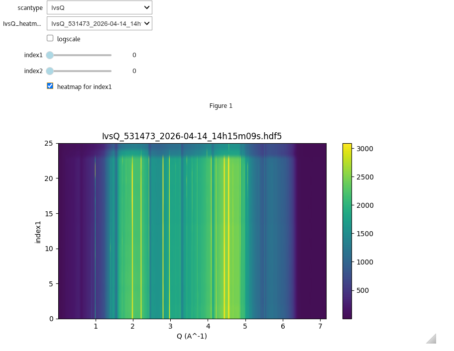

Using the interactive widget to explore folder
Description
This option allows you to create a dropdown menu to select the filetype, and then a second dropdown menu with all files which have a filename containing the that filetype. The interactive folder explorer is started by using the following commands:
from giwaxs_toolbox.plotting import individual_plotter
%matplotlib ipympl
ind=individual_plotter(datafolder='path/to/your/data')
Datasets saved using I07 fast_rsm software will be one of three types:
IvsQ : this is a 1d dataset of an azimuthal integration with intensity data, along with 2theta and Q values
Qmap : this is a 2d dataset of Intensity based on Q in-plane and Q out-of-plane
exitangles : this is a 2d dataset of Intensity based on exit angle perpendicular and exit angle parallel
If your dataset has higher indexes slider bars will show up allowing you to select which image from your dataset you want to view.
Code example
[5]:
from giwaxs_toolbox.plotting import individual_plotter, reset_plots
#set interactive ipympl
%matplotlib ipympl
#create the plotter for individual datasets
folder1="/dls/science/groups/das/ExampleData/i07/fast_rsm_example_data/tests_versioned/v2.4.1_i07_2026-04-14"
ind=individual_plotter(datafolder=folder1)
[ ]:
The code above should output an interactive widget where you can select various file types, and then scroll through all the files found which match the selected file type

Visualising data stack as a heatmap
If your lineprofile dataset has more than one dimension, you can select the heatmap option to view the data along the first index as a heatmap
